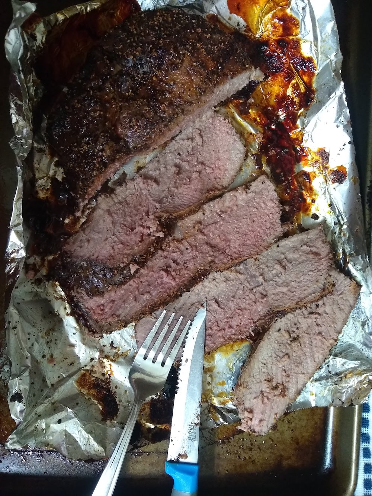

Oven:
Total Time: 4.5h
I've yet to perfect my roasting method. This has been the closest I've gotten. I liked that it was not dry. Most of the time when I try, it's either too tough or soupy. I'm going to try 3 hours next time; it was only a little too tough. Maybe letting it sit out longer would make it more tender or start with a higher temperature to develop a crispier crust. We love bbq in this house, but don't have a smoker yet!